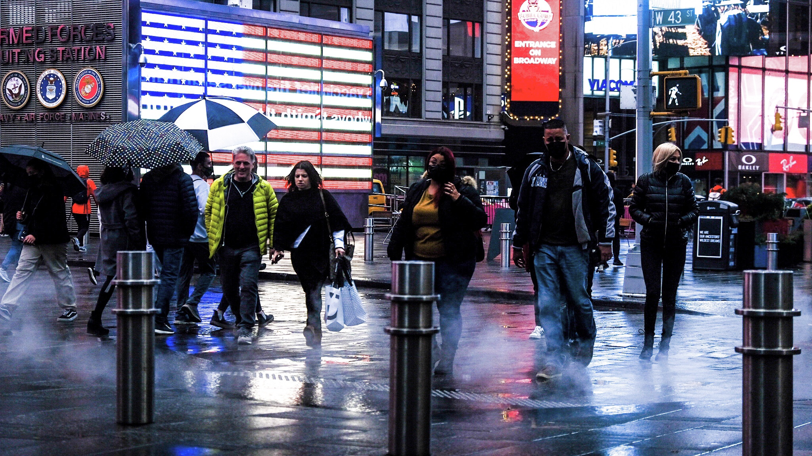
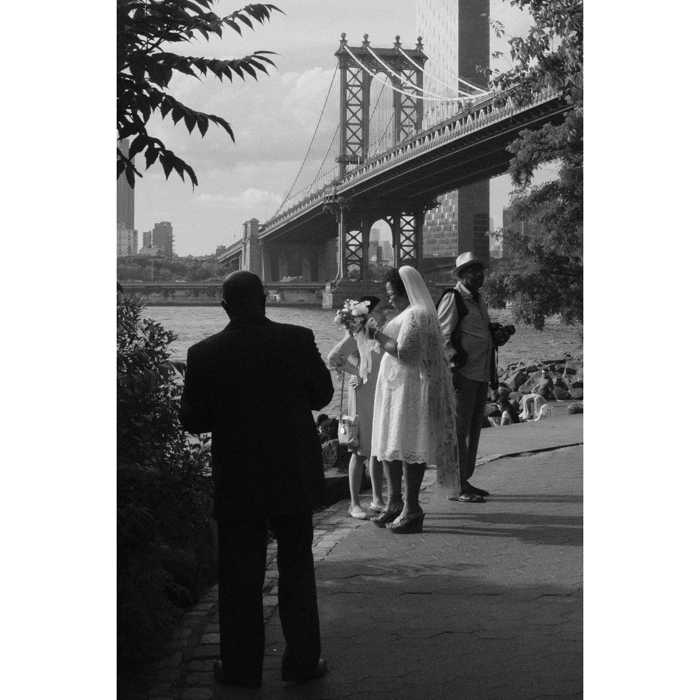
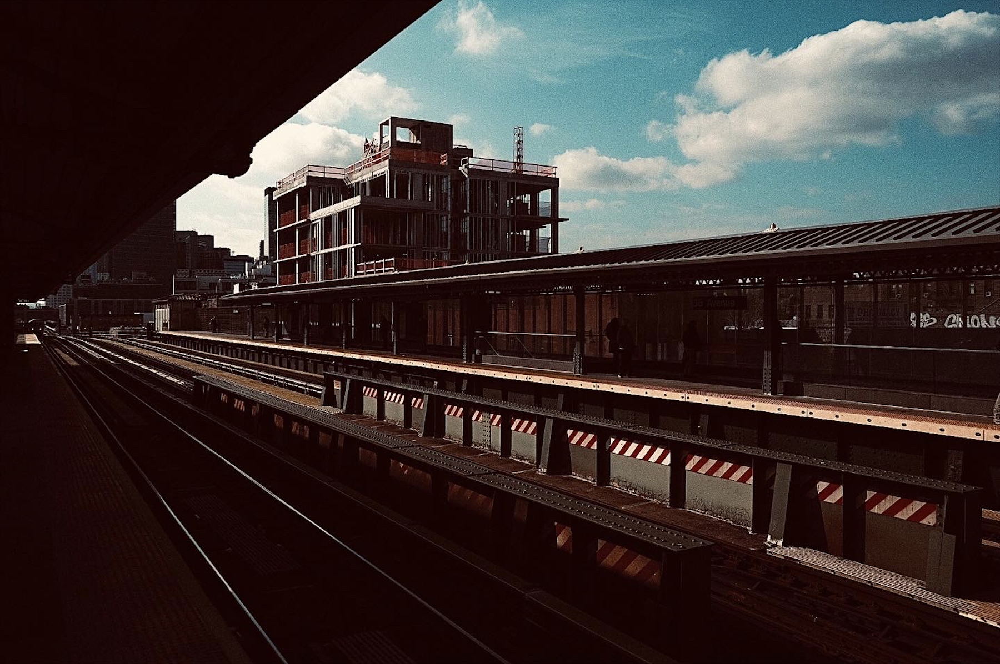
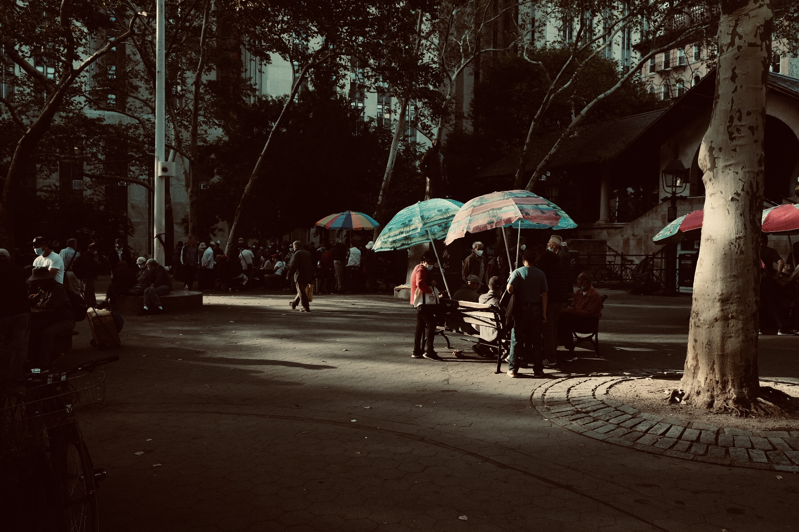

André Beganski
Business & Crypto Reporter
I shoot photography using a Fujifilm XT-30 III, a personal camera purchased at the onset of the COVID-19 pandemic that's incredibly reliable and sharp.
Decrypt
Queens Ledger

Personal



